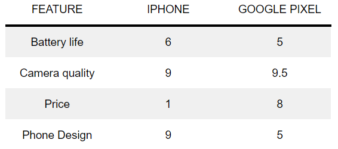
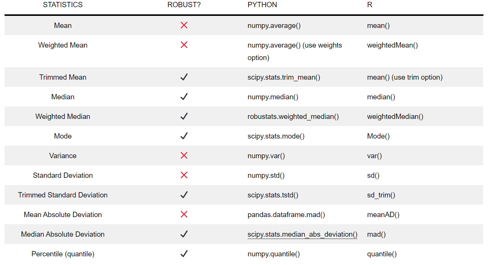

👉 This article is also published on Towards Data Science blog.
Exploratory data analysis (EDA) is an important step in any data science project. We always try to get a glance of our data by computing descriptive statistics of our dataset. If you are like me, the first function you call might be Pandas dataframe.describe() to obtain descriptive statistics. While such analysis is important, we often underestimate the importance of choosing the correct sample statistics/metrics/estimates.
In this post, we will go over several metrics that you can use in your data science projects. In particular, we are going to cover several estimates of location and variability and their robustness (sensitiveness to outliers).
The following common metrics/estimates are covered in this article:
- Estimates of location (first moment of the distribution)
- mean, trimmed/truncated mean, weighted mean
- median, weighted median
- Estimates of variability (second moment of the distribution)
- range
- variance and standard deviation
- mean absolute deviation, median absolute deviation
- percentiles (quantiles)
For each metric, we will cover:
- The definition and mathematical formulation along with some insights.
- Whether the metric is robust (sensitiveness to extreme cases)
- Python implementation and an example
The focus of this article is on the metrics and estimates used in the univariate analysis of numeric data.
A note before we start: data scientists and business analysts usually refer to values calculated from the data as a metric, whereas statisticians use the term estimates for such values(see Bruce and Bruce 2017).
Estimates of Location
Estimates of location are measures of the central tendency of the data (where most of the data is located). In statistics, this is usually referred to as the first moment of a distribution.
Mean
The arithmetic mean, or simply mean or average is probably the most popular estimate of location. There different variants of mean, such as weighted mean or trimmed/truncated mean. You can see how they can be computed below.
\begin{matrix} \text{Mean} & {= \bar{x} = \frac{\sum\limits_{i}^{n}x_{i}}{n}\quad\quad\quad\quad} & {(1.1)} \\ \text{Weighted Mean} & {= {\bar{x}}_{w} = \frac{\sum\limits_{i = 1}^{n}w_{i}x_{i}}{\sum\limits_{i}^{n}w_{i}}} & {(1.2)} \\ \text{Truncated Mean} & {= {\bar{x}}_{\text{tr}} = \frac{\sum\limits_{i = p + 1}^{n - p}x_{i}}{n - 2p}} & {(1.3)} \end{matrix}
n denotes the total number of observations (rows).
Weighted mean (equation 1.2) is a variant of mean that can be used in situations where the sample data does not represent different groups in a dataset. By assigning a larger weight to groups that are under-represented, the computed weighted mean will more accurately represent all groups in our dataset.
Extreme values can easily influence both the mean and weighted mean since neither one is a robust metric!
Another variant of mean is the trimmed mean (eq. 1.3) that is a robust estimate. This metric is used in calculating the final score in many sports where a panel of judges will each give a score. Then the lowest and the highest scores are dropped and the mean of the remaining scores are computed as a part of the final score1. One such example is in the international diving score system.
A Use Case for the Weighted Mean
If you want to buy a smartphone or a smartwatch or any gadget where there are many options, you can use the following method to choose among various options available for a gadget.
Let’s assume you want to buy a smartphone, and the following features are important to you: 1) battery life, 2) camera quality, 3) price, and 4) the phone design. Then, you give the following weights to each one:
| FEATURE | WEIGHT |
|---|---|
| Battery life | 0.15 |
| Camera quality | 0.30 |
| Price | 0.25 |
| Phone design | 0.30 |
Let’s say you have two options an iPhone and Google’s Pixel. You can give each feature a score of some value between 1 and 10 (1 being the worst and 10 being the best). After going over some reviews, you may give the following scores to the features of each phone.

So, which phone is better for you?
\begin{matrix} \text{iPhone score} & {= 0.15 \times 6 + 0.3 \times 9 + 0.25 \times 1 + 0.3 \times 9 = 6.55} \\ \text{Google Pixel score} & {= 0.15 \times 5 + 0.3 \times 9.5 + 0.25 \times 8 + 0.3 \times 5 = 7.1} \\ \end{matrix}
And based on your feature preferences, the Google Pixel might be the better option for you!
Median
Median is the middle of a sorted list, and it’s a robust estimate. For an ordered sequence x_1, x_2, ..., x_n, the median is computed as follows:
\begin{matrix} {\text{if~}n\text{~is~odd}\quad} & \left. {}\longrightarrow\quad\text{Median} = x_{\frac{n + 1}{2}} \right. \\ {\text{if~}n\text{~is~even}\quad} & \left. {}\longrightarrow\quad\text{Median} = \frac{1}{2}(x_{\frac{n}{2}} + x_{\frac{n + 1}{2}}) \right. \\ \end{matrix}
Analogous to the weighted mean, we can also have the weighted median that can be computed as follows for an ordered sequence x_1, x_2, ..., x_n with weights w_1, w_2, …, w_n where w_i>0.
\begin{matrix} & {\text{Weighted~Median} = x_{k}} \\ & {\text{where}\quad\sum\limits_{i = 1}^{n}w_{i} = 1\quad\text{and}\quad\sum\limits_{i = k + 1}^{n}w_{i} \leq \frac{1}{2}\quad\text{and}\quad\sum\limits_{i = 1}^{k - 1}w_{i} \leq \frac{1}{2}} \\ \end{matrix}
Mode
The mode is the value that appears most often in the data and is typically used for categorical data, and less for numeric data (see Bruce and Bruce 2017).
Python Implementation
Let’s first import all necessary Python libraries and generate our dataset.
import pandas as pd
import numpy as np
from scipy import stats
import robustats
df = pd.DataFrame({
"data": [2, 1, 2, 3, 2, 2, 3, 20],
"weights": [1, 0.5, 1, 1, 1, 1, 1, 0.5] # Not necessarily add up to 1!!
})
data, weights = df["data"], df["weights"]You can use NumPy’s average() function to calculate the mean and weighted mean (equations 1.1 & 1.2). For computing truncated mean, you can use trim_mean() from the SciPy stats module. A common choice for truncating the top and bottom of the data is 10%(see Bruce and Bruce 2017).
You can use NumPy’s [median()](https://numpy.org/doc/stable/reference/generated/numpy.median.html) function to calculate the median. For computing the weighted median, you can use weighted_median() from the robustats Python library (you can install it using pip install robustats)2. Robustats is a high-performance Python library to compute robust statistical estimators implemented in C.
For computing the mode, you can either use the mode() function either from the robustats library that is particularly useful on large datasets or from scipy.stats module.
mean = np.average(data) # You can use Pandas dataframe.mean()
weighted_mean = np.average(data, weights=weights)
truncated_mean = stats.trim_mean(data, proportiontocut=0.1)
median = np.median(data) # You can use Pandas dataframe.median()
weighted_median = robustats.weighted_median(x=data, weights=weights)
mode = stats.mode(data) # You can also use robustats.mode() on larger datasets
print("Mean: ", mean.round(3))
print("Weighted Mean: ", weighted_mean.round(3))
print("Truncated Mean: ", truncated_mean.round(3))
print("Median: ", median)
print("Weighted Median: ", weighted_median)
print("Mode: ", mode)>>> Mean: 4.375
>>> Weighted Mean: 3.5
>>> Truncated Mean: 4.375
>>> Median: 2.0
>>> Weighted Median: 2.0
>>> Mode: ModeResult(mode=array([2]), count=array([4]))Now, let’s see if we just remove 20 from our data, how that will impact our mean.
mean = np.average(data[:-1]) # Remove the last data point (20)
print("Mean: ", mean.round(3))
>>> Mean: 2.143You can see how the last data point (20) impacted the mean (4.375 vs 2.143). There can be many situations that we may end up with some outliers that should be cleaned from our datasets like faulty measurements that are in orders of magnitude away from other data points.
Estimates of Variability
The second dimension (or moment) addresses how the data is spread out (variability or dispersion of the data). For this, we have to measure the difference (aka residual) between an estimate of location and an observed value(see Bruce and Bruce 2017).
Mean Absolute Deviation
One way to get this estimate is to calculate the difference between the largest and the lowest value to get the range. However, the range is, by definition, very sensitive to the two extreme values. Another option is the mean absolute deviation that is the average of the sum of all absolute deviation from the mean, as can be seen in the below formula:
\text{Mean~absolute~deviation} = \frac{\sum\limits_{i = 1}^{n}\mid x_{i} - \bar{x}\mid}{n}
One reason why the mean absolute deviation receives less attention is since mathematically it’s preferable not to work with absolute values if there are other desirable options such as squared values available (for instance, x^2 is differentiable everywhere while the derivative of |x| is not defined at x=0).
Variance & Standard Deviation
The variance and standard deviation are much more popular statistics than the mean absolute deviation to estimate the data dispersion.
\begin{matrix} \text{Variance} & {= s^{2} = \frac{\sum\limits_{i = 1}^{n}(x_{i} - \bar{x})^{2}}{n - 1}} \\ & \\ \text{Standard Deviation} & {= s = \sqrt{\text{Variance}}} \\ \end{matrix}
In statistics, s is used to refer to a sample standard deviation, whereas \sigma refers to the population standard deviation.
The variance is actually the average of the squared deviations from the mean.
As can be noted from the formula, the standard deviation is on the same scale as the original data making it an easier metric to interpret than the variance. Analogous to the trimmed mean, we can also compute the trimmed/truncated standard deviation that is less sensitive to outliers.
A good way of remembering some of the above estimates of variability is to link them to other metrics or distances that share a similar formulation (see Bruce and Bruce 2017). For instance,
Median Absolute Deviation (MAD)
Like the arithmetic mean, none of the estimates of variability (variance, standard deviation, mean absolute deviation) is robust to outliers. Instead, we can use the median absolute deviation from the median to check how our data is spread out in the presence of outliers. The median absolute deviation is a robust estimator, just like the median.
\begin{matrix} & {\text{Median absolute deviation} = \text{Median}(\mid x_{1} - m\mid,\mid x_{2} - m\mid,...,\mid x_{n} - m\mid)} \\ & {\quad\quad\text{where }m\text{ is the median}} \\ \end{matrix}
Percentiles
Percentiles (or quantiles) is another measure of the data dispersion that is based on order statistics (statistics based on sorted data). P-th percentile is the least percentage of the values that are lower than or equal to P percent.
25th (Q1) and 75th (Q3) percentiles are particularly interesting since their difference (Q3 – Q1) shows the middle 50% of the data. The difference is known as the interquartile range (IQR) (IQR=Q3-Q1). Percentiles are used to visualize data distribution using boxplots.
A nice article about boxplots is available on Towards Data Science blog.
Python Implementation
You can use NumPy’s var() and std() function to calculate the variance and standard deviation, respectively. On the other hand, to calculate the mean absolute deviation, you can use Pandas mad() function. For computing the trimmed standard deviation, you can use SciPy’s tstd() from the stats module. You can use Pandas boxplot() to quickly visualize a boxplot of the data.
import pandas as pd
import numpy as np
from scipy import stats
variance = np.var(data)
standard_deviation = np.std(data) # df["Population"].std()
mean_absolute_deviation = df["data"].mad()
trimmed_standard_deviation = stats.tstd(data)
median_absolute_deviation = stats.median_abs_deviation(data, scale="normal") # stats.median_absolute_deviation() is deprecated
# Percentile
Q1 = np.quantile(data, q=0.25) # Can also use dataframe.quantile(0.25)
Q3 = np.quantile(data, q=0.75) # Can also use dataframe.quantile(0.75)
IQR = Q3 - Q1
print("Variance: ", variance.round(3))
print("Standard Deviation: ", standard_deviation.round(3))
print("Mean Absolute Deviation: ", mean_absolute_deviation.round(3))
print("Trimmed Standard Deviation: ", trimmed_standard_deviation.round(3))
print("Median Absolute Deviation: ", median_absolute_deviation.round(3))
print("Interquantile Range (IQR): ", IQR)>>> Variance: 35.234
>>> Standard Deviation: 5.936
>>> Mean Absolute Deviation: 3.906
>>> Trimmed Standard Deviation: 6.346
>>> Median Absolute Deviation: 0.741
>>> Interquantile Range (IQR): 1.0
Conclusion
In this post, I talked about various estimates of location and variability. In particular, I covered more than 10 different sample statistics and whether they are robust metrics or not. A table of all the metric along with their corresponding Python and R functions are summarized in Table 3. We also saw how the presence of an outlier may impact non-robust metrics like the mean. In this case, we may want to use a robust estimate. However, in some problems, we are interested in studying extreme cases and outliers such as anomaly detection.
Useful Links
References
Footnotes
Wikipedia, Truncated mean↩︎
https://github.com/FilippoBovo/robustats↩︎
Citation
@online{alizadeh2020,
author = {Esmaeil Alizadeh},
title = {A {Guide} to {Metrics} {(Estimates)} in {Exploratory} {Data}
{Analysis}},
date = {2020-12-14},
url = {https://new.ealizadeh.com/blog/guide-to-estimates-in-exploratory-data-analysis},
langid = {en}
}